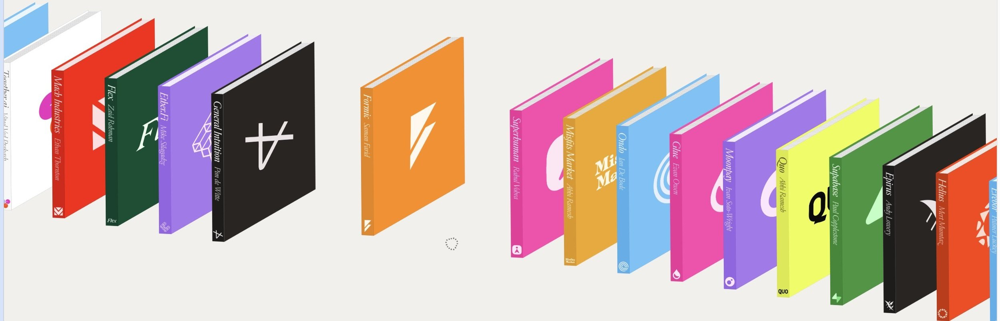

上次做成的就是这个
用户丢来 Chapter One 首页。看起来像一排立体书。打开原站一量：十六张透明 PNG，负边距叠在一起，高度跟横坐标走。于是笔记的第一屏就是那一排书，正在走。鼠标停住，左右让开。
不是先写分类。是先让那一架子在笔记里活过来。essay 跟在后面，只解释你已经看见的东西。

一次只收一个发明
Chapter One 整站还有宣言段、钉住滚动、故事页。那次只收「架子」。Creed 整站有十屏，只收「风景里坐着产品窗」。一次做一个发明。做完挂到 living/INDEX.md。下一屏是下一篇。
做好的架子在 living/shelf。做好的 Creed 排法在 living/creed。打开它们，不要在这页再摘要一遍。

上次为什么像
书是他们烤好的 PNG，不是我生成的假书。斜率是他们脚本里的 10 / 步宽，不是「看起来斜一点」。火车复制三遍，因为原站就是这么循环。悬停左右让开 120 像素，抬高 18 像素，都是量出来的。
然后给三个开关：叠、斜、走。关掉哪一件，哪一件的贡献就露出来。读者不是在读原理，是在拆一台机器。
下一次要比这次好
第一屏必须先对上用户的截图，再写一句解释。悬停、滚动、开关，要在真浏览器里点过。截到片头或空白，就还没看见，不能开始写。
开关不要压在发明上。数字写进配方，不要写进货架摘要。DESIGN.md 只留一句指针。
给发明起一个谎的名字，一句就够：不是三维；不是模板；灰不是另一种颜色。读者带着这句去看第一屏。
配方 · 下次来了一个陌生页
- 打开活页。问这四句：看见什么；是不是三维；数字是多少；图从哪来。在原站上量，不要凭印象。
- 只收用户指着的那一个发明。下载原图。抄原站的数。
- 在
living/名字/做一页 HTML。第一屏就是发明，正在转。essay 用图注教，页尾给配方。 - 加能拆开的开关。在真浏览器里悬停、滚动、开关。第一屏要对得上用户那张图。
- 货架
living/INDEX.md加一行。DESIGN.md加一节指针。不要另写一份没有图的摘要。
Goal: 打开 living/<name>/index.html，第一屏就是那个发明 Hard bar: 和用户截图同一件事在发生（悬停让开、字当词、窗坐在风景里） Improve: 再拆掉一个你会误判的谎（不是三维 / 不是模板 / …） 问：看见什么 → 是不是三维 → 数字是多少 → 图从哪来 做：下载原图，抄原数，第一屏先活，再写字 挂：INDEX.md 一行，DESIGN.md 一句指针
动效必须能再播。写成字的缓动等于没写。打开就要看见；错过了要有按钮。
用户说还可以更好。标准很简单：下一次打开笔记的人，不用问你「这是怎么做的」。他按开关就能看见。